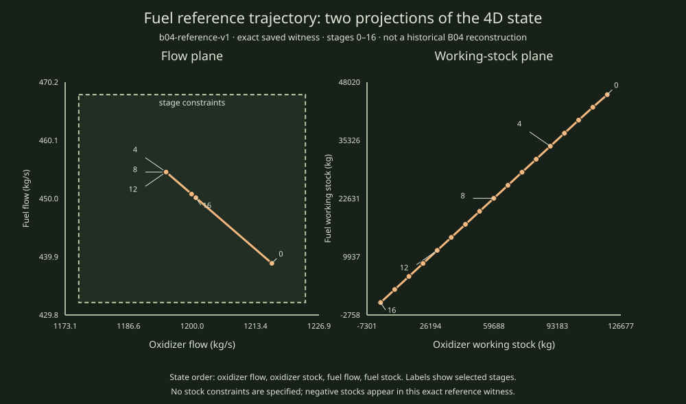

Exact saved reference data, shown as an illustration
Projecting a four-state fuel trajectory into two planes
The state is (oxidizer flow, oxidizer working stock, fuel flow, fuel working stock). The left panel projects each four-dimensional state onto the two flow coordinates; the right projects onto the two working-stock coordinates. Stage labels show 0, 4, 8, 12, and 16.

Evidence scope. This plots one exact optimal witness from the separate b04-reference-v1 article-derived reference input. It is not a reconstruction of historical B04, not a complete optimal-control family, and not an OSQP or HPIPM comparison. The plotted flow box shows the declared stage constraints. The stock coordinates can become negative because the source specifies no stock bounds.
Reproduce
python3 scripts/reports/mpc01/b04_projection_example.pyOracle method. The witness comes from exact rational minimization over the affine terminal plane, followed by exact feasibility checks for the selected control history. That construction establishes one global optimum for this frozen reference variant. It is not Strategy A, Strategy B, or an external QP solver. See the pinned input case, exact witness, oracle source, and independent exact-check report.